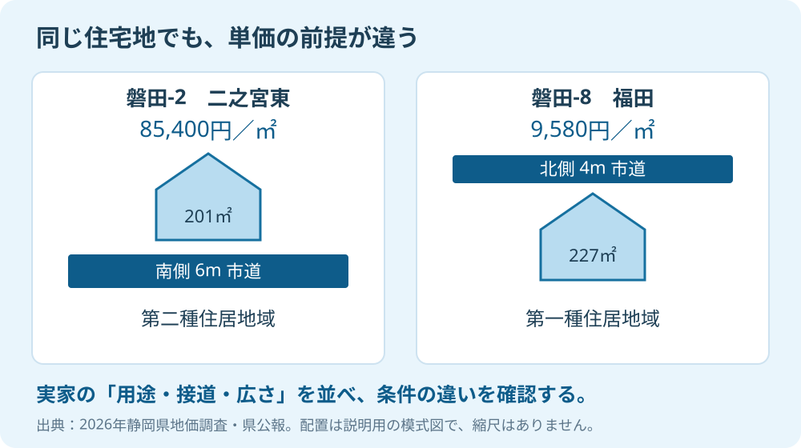

磐田市の地価調査を開くと、同じ市内でも単価が大きく違います。実家に近い地名を見つけて、「この価格ならいくらになる」と計算したくなる。ただ、査定に使う地点は、近いという理由だけでは選べません。
大石浩之（磐田市／不動産業）です。宅地建物取引士として私は、公表価格を知ることより、その地点を選んだ理由を説明できることを重く見ます。2026年9月21日に県の資料を照合し、実家の査定で比較する順番を整理しました。
磐田市の2地点は、上昇と下落に分かれた
静岡県は2026年9月16日、令和8年静岡県地価調査結果を公表しました。資料2の基準地標準価格・変動率一覧では、磐田-2が85,400円／㎡で前年比1.1％上昇、磐田-8が9,580円／㎡で1.4％下落です。どちらも住宅地の基準地です。
| 基準地番号・所在 | 2026年の価格 | 2025年の価格 | 前年比 |
|---|---|---|---|
| 磐田-2 二之宮東16番10外 | 85,400円／㎡ | 84,500円／㎡ | 1.1％上昇 |
| 磐田-8 福田字水神野5096番1 | 9,580円／㎡ | 9,720円／㎡ | 1.4％下落 |
国土交通省の不動産情報ライブラリは、地価調査の価格時点を7月1日と説明しています。今回の価格は2026年7月1日時点です。9月16日に公表されたからといって、9月16日に売買された金額ではありません。公表日と価格の基準日を分けて読みます。
意外に思われるかもしれませんが、両地点とも住宅地なのに、変動の向きが逆です。「磐田の地価は上がった」と一言で実家に当てはめることはできません。二之宮東全体の成約相場が85,400円／㎡、福田全体が9,580円／㎡という意味でもありません。
私は、誰でも同じ地点の数字を見られることを評価します。家族と仲介会社が、価格の話を始める共通の資料になる。会社ごとの査定額が違うときも、公的な価格とどう関係するかを聞く入口にできます。
そのうえで注文したいのは、数字だけを抜き出した査定説明です。地名と単価が並んでいるだけでは、自分の家に使える根拠か判断できません。私は基準地番号、価格時点、個別条件を一組で示してほしいと考えます。地価公示と売却価格の考え方も参照し、資料の種類からそろえます。
基準地を選ぶ順番は、用途・道路・広さ
地価調査の基準地は、土地の利用状況や環境、地積、形状などが近隣地域で標準的な土地として選ばれます。国土交通省は、近隣のすべての土地に同じ価格を当てはめるものではないと説明しています。面積や道路などの個別条件を比較して利用する資料です。
私が売主の方へ勧める確認順は、用途、道路、広さと形です。まず、住宅として使う土地なのか、店舗が集まる場所なのかを合わせる。次に、敷地が接している道路の幅や向きを比べる。最後に、面積と形状が、検討する土地の使い方に近いかを見ます。
「住宅地」という調査上の区分と、「第一種住居地域」などの用途地域は別の欄です。用途地域は、建てられる建物の用途などを定める区分です。住宅地同士を選んでも、それで条件が全部そろったわけではありません。略号を見つけたら、正式な区分名まで確認します。
道路は幅だけで終わらせません。敷地のどちら側に接するか、公道か私道か、車をどう入れるかも査定担当者に聞きます。地図の上で道に見えることと、建築上どう扱われるかも同じではありません。自分の実家の建築可否や権利関係は、担当窓口や専門家に確認を。
広さも、「広いから総額が上がる」だけでは済みません。買主が使いやすい区画か、分けるための作業が必要かで検討事項が変わります。資料にない条件を推測で埋めず、不明な欄を残して現地確認を頼むほうが、査定額の根拠を後から追えます。
県公報で二之宮東と福田の条件を比べる
静岡県公報の2026年9月16日号外第68号には、基準地の地積、利用状況、前面道路などが載っています。価格一覧だけで止まらず、同じ基準地番号の行を開くと、二之宮東と福田では道路条件も駅への距離も異なることが分かります。
| 県公報の比較項目 | 磐田-2／二之宮東 | 磐田-8／福田 |
|---|---|---|
| 地積 | 201㎡ | 227㎡ |
| 前面道路 | 南側・幅6mの市道 | 北側・幅4mの市道 |
| 用途地域 | 第二種住居地域 | 第一種住居地域 |
| 主要交通施設への接近状況 | 磐田駅750m | 御厨駅5.8km |
この表は、2地点を順位付けするためのものではありません。両方の単価を同じ条件の価格として扱えないことを示しています。南側6mの道と北側4mの道の差だけで、価格差のすべてを説明したことにもなりません。
私は、磐田駅周辺の住宅地を参考にするなら、実家も同じように駅へ行ける立地か、道と敷地の関係が似ているかを確かめます。福田の実家でも、地区名だけで磐田-8を自動的に採用しません。周辺の使われ方や道路条件が近い別の地点もあるか、担当者に比較を頼みます。

査定書では、採用した地点と補正の理由を聞く
査定書で公的な価格が使われていたら、売主は基準地番号と条件差の扱いを確認できます。「補正」とは、比較対象と実家の違いを価格に反映する調整です。公的な単価を引用したことだけで、査定額が正しいと決まるわけではありません。
私はこう考えます。高い地点の数字を借りて査定額を飾っても、買主がその差額を払ってくれるわけではない。売主に期待してもらいやすい数字を出すより、どこが似ていて、どこが違うかを説明する。それが不動産屋の仕事です。
単価差を実感するため、面積200㎡の土地を仮定します。85,400円に200を掛けると1,708万円。9,580円なら191万6,000円です。差は1,516万4,000円になります。計算式はそれぞれ「公表単価×仮定の200㎡」。実際の相談事例でも、この2地点の売却総額でもありません。
私はこの計算を、実家の値段を出すためには使いません。比較地点を取り違えると、掛け算が正しくても説明全体がずれる、その大きさを見るためです。手数料や解体費なども入っておらず、家族の手取りとして使える数字ではありません。
私にも迷いはあります。条件がぴたりと合う基準地がないとき、どの違いを先に考えるかです。そんな場合に一つの地点へ無理に寄せると、かえって説明が粗くなる。候補の共通点と違いを並べ、取引事例や現地の確認と併せて考えたいと思います。
担当者には「なぜこの地点か」「実家との違いをどこに反映したか」「土地と建物をどう分けたか」を聞いてください。説明の見方は、査定額の根拠と不動産屋の本音でも扱っています。査定の数字が高い順に会社を決める前の確認です。
今日の準備は、実家と基準地を一枚に並べる
今日できる準備は、実家の所在地、地積、道路の幅と向き、用途地域を一枚に書くことです。分からない欄には「未確認」と記します。候補の基準地番号を横に置き、似ている点と違う点を仲介会社に聞けば、査定を受け取る準備になります。
- 2026年7月1日の地点価格と、売却する時点を分ける。
- 地名だけで選ばず、用途・道路・広さを照合する。
- 基準地の採用理由と、条件差の調整を聞く。
相続の話合いなどで価格資料を使うなら、磐田で査定と鑑定評価を使い分ける考え方も確認してください。何のための価格かで、必要な資料は変わります。税務・登記・相続の個別判断は専門家に確認を。
富士ヶ丘サービスは、磐田市・袋井市を中心に介護と不動産を一体で相談できる窓口を設けています。家族が困らない売却のため、私は価格の前提をそろえてから案内します。今日売ると決める必要はありません。査定の説明を一つ理解できれば、判断の材料が増えます。